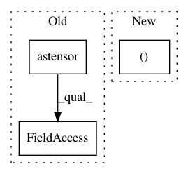

ab15bc09577a2ca2616a5f662f63d66438c4403e,foolbox/ext/native/evaluate.py,,evaluate_l2,#Any#Any#Any#,8
Before Change
def evaluate_l2(fmodel, inputs, labels, *, attacks, epsilons):
x = ep.astensor(inputs)
y = ep.astensor(labels)
attack_success = np.zeros((len(attacks), len(epsilons), len(x)), dtype=np.float32)
for i, attack in enumerate(attacks):
attack = attack(fmodel)
sig = signature(attack.__call__)
minimizing = "epsilon" not in sig.parameters
if minimizing:
// TODO: support hyperparameters
xp = ep.astensor(attack(x.tensor, y.tensor))
logits = fmodel(xp)
predictions = logits.argmax(axis=-1)
correct = (predictions == labels).float32().numpy().astype(np.bool)
perturbations = xp - x
norms = flatten(perturbations).square().sum(axis=-1).sqrt().numpy()
for j, epsilon in enumerate(epsilons):
attack_success[i, j] = np.logical_and(
np.logical_not(correct), norms <= epsilon
)
else:
for j, epsilon in enumerate(epsilons):
xp = ep.astensor(attack(x.tensor, y.tensor, epsilon=epsilon))
logits = fmodel(xp.tensor)
predictions = logits.argmax(axis=-1)
correct = (predictions == labels).float32().numpy().astype(np.bool)
perturbations = xp - x
After Change
def evaluate_l2(fmodel, inputs, labels, *, attacks, epsilons):
inputs, labels = wrap_(inputs, labels)
x = inputs
y = labels
In pattern: SUPERPATTERN
Frequency: 3
Non-data size: 3
Instances
Project Name: bethgelab/foolbox
Commit Name: ab15bc09577a2ca2616a5f662f63d66438c4403e
Time: 2020-01-29
Author: git@jonasrauber.de
File Name: foolbox/ext/native/evaluate.py
Class Name:
Method Name: evaluate_l2
Project Name: bethgelab/foolbox
Commit Name: 2f1905529d25e62179850aa222f65ed685ff682f
Time: 2020-01-31
Author: git@jonasrauber.de
File Name: foolbox/ext/native/attacks/inversion.py
Class Name: InversionAttack
Method Name: __call__
Project Name: bethgelab/foolbox
Commit Name: bf635f90dae66e4ddd3e1f342dca925b3c99faf7
Time: 2020-02-11
Author: git@jonasrauber.de
File Name: foolbox/attacks/binarization.py
Class Name: BinarizationRefinementAttack
Method Name: __call__